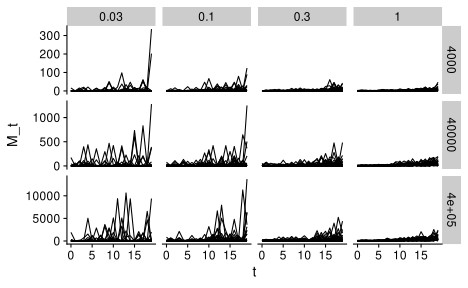
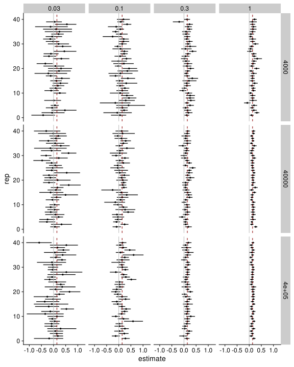

# set of data analysis and viz tools
library(tidyverse)
library(furrr)
plan(multisession, workers = 3)
# file system helpers
library(fs)
# specifying locations within a project
library(here)
# plotting helpers
library(cowplot)
library(patchwork)
library(ggbeeswarm)
library(ggdist)
theme_set(theme_cowplot())
# stats
library(rstanarm)
options(mc.cores = parallel::detectCores())
library(broom.mixed)We’ve done some examination of the ability to detect exponential increase when there is no noise beyond the Poisson error process associated with sequencing. But we know there is additional noise due to processes such as shedding, sample collection, and sample processing.
Questions this analysis considers:
Assume a Gamma-Poisson (also known as Negative Binomial) model for both the real data and the statistical inference model.
I will start with a simple model.
For now, I will assume that the fraction of the population that is infected grows exponentially without any noise. \[\begin{align} i(t) = i(0) \exp(r t), \end{align}\] and that number of reads of the pathogen in the sample from time \(t\), \(M(t)\), has expectation \[\begin{align} E[M(t)] &= i(t) \cdot s B \mathcal M \\&\equiv i(s) \cdot a, \end{align}\] where
This formula for the mean read count of the pathogen is derived elsewhere. For simplicity I’m treating all of \(s\), \(B\), and \(\mathcal M\) as fixed parameters. Since all of these parameters are constants that multiply together, it is convenient for later calculations to define \(a \equiv sB\mathcal M\).
TODO
I assume a Negative Binomial model for the number of reads of the pathogen in the sample from time \(t\), using the ‘alternative parameterization’ used described in the Stan docs; however, I’ll follow Rstanarm and use \(\theta\) in place of \(\phi\) for the reciprocal dispersion parameter.
If \(E[M] = \mu\), then the variance of \(M\) is \[\begin{align} \text{Var}[M] &= \mu + \frac{\mu^2}{\theta} \\&= \mu \left(1 + \frac{\mu}{\theta} \right), \end{align}\] and the coefficient of variation is \[\begin{align} \text{CV}[M] &= \frac{\sqrt{\text{Var}[M]}}{E[M]} \\&= \sqrt{\frac{1}{\mu} + \frac{1}{\theta}}. \end{align}\]
(speculative) Intuitively, the coefficient of variation is the measure of noise relevant for our power to infer exponential growth rate. The CV is Poisson-like when \(\mu \ll \theta\) and Gamma-like when \(\mu \gg \theta\). In the Poisson regime, we can reduce the CV by increasing sequencing effort and hence increasing \(\mu\); however, once \(\mu \gg \theta\), increasing the sequencing effort will have a negligible benefit. Instead, we need to collect additional samples and/or re-measure existing samples so as to effectively average out the extra-Poisson noise.
I will simulate using stats::rnbinom with the parameterization matching
The size argument in rnbinom is the (reciprocal) dispersion parameter \(\phi\) in stan docs, but which is called \(\theta\) in rstanarm::neg_binomial_2.
# Total time of monitoring, in days
total_time <- 20
sampling_days <- seq(0, total_time - 1, by = 1)
# Initial fraction of population infected
i_0 <- 1e-4
# Growth rate of infections to correspond to 4 doublings
doubling_time <- 5
r <- log(2) / doubling_time
# Multiplier a s.t. expected number of reads spans 1 over the range
a <- 0.4 / i_0
# a * i_0 * exp(r * sampling_days)
# reciprocal-dispersion parameter; smaller values = lower variance
theta_sim <- 5e-1
set.seed(42)
sim <- tibble(t = sampling_days) %>%
mutate(
i_t = i_0 * exp(r * t),
M_t_expected = a * i_t,
# lambda_t = rgamma(n(), shape = 1, rate = 1 / M_t_expected),
# M_t = rpois(n(), lambda_t)
M_t = rnbinom(n(), size = theta_sim, mu = M_t_expected)
)Now we want to repeat the simulations many times for a range of values of \(\theta\) and \(a\).
simulate_monitoring <- function(theta, a) {
tibble(t = sampling_days) %>%
mutate(
i_t = i_0 * exp(r * t),
M_t_expected = a * i_t,
M_t = rnbinom(n(), size = theta, mu = M_t_expected)
)
}
set.seed(42)
sims <- crossing(
theta = c(3e-2, 1e-1, 3e-1, 1e0),
# a = 4000 * c(1, 3, 10, 30),
a = 4000 * c(1, 10, 100),
rep = 1:40
) %>%
mutate(
data = map2(theta, a, simulate_monitoring),
M_total = map_dbl(data, ~ sum(.x$M_t))
)sims %>%
unnest(data) %>%
ggplot(aes(t, M_t)) +
facet_grid(a ~ theta, scales = 'free_y') +
geom_line(aes(group = rep))
CHECK: Do any simulations have no observations?
# A tibble: 5 × 3
theta `M_total == 0` n
<dbl> <lgl> <int>
1 0.03 FALSE 113
2 0.03 TRUE 7
3 0.1 FALSE 120
4 0.3 FALSE 120
5 1 FALSE 120Yes! We need to handle these separately, since they will cause errors when we try to fit the GLM.
FALSE[1] FALSELet’s try fitting on a subset, for now using the ‘optimizing’ algorithm to speed things up. We must restrict ourselves to cases where the total count is at least 1, to be able to fit. We might consider restricting ourselves to a higher count than this.
TODO: disable centering the predictors; otherwise, need to change our intercept prior to be based on the midpoint of the simulation.
sims_fit <- sims %>%
# filter(rep <= 2, M_total > 0) %>%
filter(M_total > 0) %>%
mutate(
prior_intercept_mean = log(a * i_0),
# Note: For testing with 'optimizing', we can fit in parallel
fit = map(data, ~stan_glm(
M_t ~ t,,
data = .x,
family = neg_binomial_2,
prior = normal(0, 0.5, autoscale = FALSE),
# prior_intercept = normal(prior_intercept_mean, 2.5, autoscale = FALSE),
prior_aux = exponential(2, autoscale = FALSE),
algorithm = 'optimizing',
))
)TODO
stan_glm
family: neg_binomial_2 [log]
formula: M_t ~ t
observations: 20
predictors: 2
------
Median MAD_SD
(Intercept) 2.9 2.0
t -0.4 0.3
Auxiliary parameter(s):
Median MAD_SD
reciprocal_dispersion 0.1 0.0
------
* For help interpreting the printed output see ?print.stanreg
* For info on the priors used see ?prior_summary.stanreg# A tibble: 2 × 5
term estimate std.error conf.low conf.high
<chr> <dbl> <dbl> <dbl> <dbl>
1 (Intercept) 2.86 1.96 -0.536 6.58
2 t -0.429 0.272 -0.914 0.0584fit %>% prior_summaryPriors for model '.'
------
Intercept (after predictors centered)
~ normal(location = 0, scale = 2.5)
Coefficients
~ normal(location = 0, scale = 0.5)
Auxiliary (reciprocal_dispersion)
~ exponential(rate = 2)
------
See help('prior_summary.stanreg') for more detailsOur goal is to assess how dispersion impacts our ability to infer the exponential trend.
One way we can do that is plot credible intervals for the growth rate \(r\), for all simulations, group by theta, against the actual growth rate.
An easy way to get CIs is with broom.mixed::tidy(),
# A tibble: 2 × 5
term estimate std.error conf.low conf.high
<chr> <dbl> <dbl> <dbl> <dbl>
1 (Intercept) 2.86 1.96 -0.536 6.58
2 t -0.429 0.272 -0.914 0.0584Besides correctly inferring the growth rate, we are also interested in the our posterior that the sequence is increasing (possibly above a certain rate of increase; here I’ll just consider a rate above 0). We can do this for a single fit like
# post <- fit %>% as.matrix %>% as_tibble %>% janitor::clean_names() %>%
# glimpse
fit %>% as.matrix %>% {mean(.[, 't'] > 0)}[1] 0.075x %>%
ggplot(aes(y = rep, x = estimate)) +
facet_grid(a ~ theta) +
geom_pointinterval(
aes(xmin = conf.low, xmax = conf.high),
fatten_point = 1
) +
geom_vline(xintercept = 0, color = 'grey') +
geom_vline(xintercept = r, linetype = 2, color = 'darkred')
Note that for lambda=0.03, some intervals are missing; these are cases where the dispersion was so high that we never saw the pathogen. In those cases, our estimate of the growth rate is simply the prior; perhaps we can show that?
From this graph, it looks like a 10X increase in dispersion requires more than a 10X increase in sequencing effort to achieve the same power.
Let’s check how calibrated these CIs are, by comparing the proportion of fits that contain the true value of \(r\) against the expected 90%. Note, the case where \(\theta = 0.03\) is currently not adjusted for the missing data.
x %>%
mutate(
true_value_in_ci = r >= conf.low & r <= conf.high
) %>%
summarize(.by = c(theta, a),
proportion = mean(true_value_in_ci)
)# A tibble: 12 × 3
theta a proportion
<dbl> <dbl> <dbl>
1 0.03 4000 0.853
2 0.03 40000 0.744
3 0.03 400000 0.8
4 0.1 4000 0.775
5 0.1 40000 0.825
6 0.1 400000 0.725
7 0.3 4000 0.85
8 0.3 40000 0.85
9 0.3 400000 0.875
10 1 4000 0.85
11 1 40000 0.925
12 1 400000 0.95 These seem to be fairly calibrated; would need to do a binomial test to look for evidence of deviation.
Now let’s look at the power to detect exponential growth, by considering the posterior probability that \(r>0\).
x %>%
ggplot(aes(y = as.factor(theta), x = prob_increasing)) +
facet_wrap(~a, labeller = label_both) +
labs(x = 'Pr(r > 0)', y = 'reciprocal dispersion, theta') +
geom_dots(binwidth = 0.01) # stat_dotsinterval()TODO: in revising, do the above calculation at the same time as the inteval extraction. Could also do the interval in the same manner, from the posterior.
x %>%
ggplot(aes(y = as.factor(a), x = prob_increasing)) +
facet_wrap(~theta, labeller = label_both) +
labs(x = 'Pr(r > 0)', y = 'reciprocal dispersion, theta') +
geom_dots(binwidth = 0.01) # stat_dotsinterval()How often do we infer that \(r>0\) is more likely than not? Or with 80% certainty?
Note: We have not filled in the missing rows where there were no observations; in these cases, we cannot infer increase.
x %>%
summarize(.by = c(theta, a),
prob_0.5 = mean(prob_increasing > 0.5),
prob_0.6 = mean(prob_increasing > 0.6),
prob_0.8 = mean(prob_increasing > 0.8),
)# A tibble: 12 × 5
theta a prob_0.5 prob_0.6 prob_0.8
<dbl> <dbl> <dbl> <dbl> <dbl>
1 0.03 4000 0.618 0.588 0.324
2 0.03 40000 0.513 0.513 0.282
3 0.03 400000 0.55 0.525 0.325
4 0.1 4000 0.775 0.75 0.525
5 0.1 40000 0.7 0.65 0.475
6 0.1 400000 0.8 0.675 0.575
7 0.3 4000 0.95 0.9 0.85
8 0.3 40000 0.9 0.9 0.825
9 0.3 400000 0.95 0.95 0.825
10 1 4000 0.975 0.975 0.95
11 1 40000 1 1 1
12 1 400000 1 1 1 Increasing the sequencing depth cannot make up for an increase in overdispersion. This makes sense — once we’re in a regime where the expected read count is above 0 and there is lots of overdispersion relative to Poisson, sequencing more doesn’t help much; it just helps us get a more precise measurement of the latent noisy (relative) abundance, and what we need is to reduce noise in that latent abundance. To do this, we need to measure more samples with independent relative abundances. We can reduce the noise from sample processing by processing the same sample repeatedly; however, for other noise sources we’d need to collect new samples from different sources or from more days.
Note that because I use the correct model to fit the data, increasing the dispersion does not make the fit overconfident; the credible intervals are still tending to cover the true value of r the expected 90% of the time. In contrast, if I fit using Poisson regression instead, I expect the fit to be overconfident, that is that the credible intervals will be too small and we’ll be missing the true r more than 90% of the time, for the cases there theta is significantly less than 1.
sessioninfo::session_info()─ Session info ─────────────────────────────────────────────────────────
setting value
version R version 4.2.2 (2022-10-31)
os Arch Linux
system x86_64, linux-gnu
ui X11
language (EN)
collate en_US.UTF-8
ctype en_US.UTF-8
tz America/New_York
date 2023-02-09
pandoc 3.0 @ /usr/bin/ (via rmarkdown)
─ Packages ─────────────────────────────────────────────────────────────
package * version date (UTC) lib source
assertthat 0.2.1 2019-03-21 [1] CRAN (R 4.0.0)
backports 1.4.1 2021-12-13 [1] CRAN (R 4.1.2)
base64enc 0.1-3 2015-07-28 [1] CRAN (R 4.0.0)
bayesplot 1.9.0 2022-03-10 [1] CRAN (R 4.2.0)
beeswarm 0.4.0 2021-06-01 [1] CRAN (R 4.1.0)
boot 1.3-28 2021-05-03 [2] CRAN (R 4.2.2)
broom 1.0.1 2022-08-29 [1] CRAN (R 4.2.1)
broom.mixed * 0.2.9.4 2022-04-17 [1] CRAN (R 4.2.0)
bslib 0.4.1 2022-11-02 [1] CRAN (R 4.2.2)
cachem 1.0.6 2021-08-19 [1] CRAN (R 4.1.1)
callr 3.7.3 2022-11-02 [1] CRAN (R 4.2.1)
cellranger 1.1.0 2016-07-27 [1] CRAN (R 4.0.0)
cli 3.4.1 2022-09-23 [1] CRAN (R 4.2.1)
codetools 0.2-18 2020-11-04 [2] CRAN (R 4.2.2)
colorspace 2.0-3 2022-02-21 [1] CRAN (R 4.2.0)
colourpicker 1.2.0 2022-10-28 [1] CRAN (R 4.2.1)
cowplot * 1.1.1 2021-08-27 [1] Github (wilkelab/cowplot@555c9ae)
crayon 1.5.2 2022-09-29 [1] CRAN (R 4.2.1)
crosstalk 1.2.0 2021-11-04 [1] CRAN (R 4.1.2)
DBI 1.1.3 2022-06-18 [1] CRAN (R 4.2.1)
dbplyr 2.2.1 2022-06-27 [1] CRAN (R 4.2.1)
digest 0.6.30 2022-10-18 [1] CRAN (R 4.2.1)
distill 1.5.2 2022-11-10 [1] Github (rstudio/distill@9c1a1a2)
distributional 0.3.1 2022-09-02 [1] CRAN (R 4.2.1)
downlit 0.4.2 2022-07-05 [1] CRAN (R 4.2.1)
dplyr * 1.1.0 2023-01-29 [1] CRAN (R 4.2.2)
DT 0.26 2022-10-19 [1] CRAN (R 4.2.1)
dygraphs 1.1.1.6 2018-07-11 [1] CRAN (R 4.0.2)
ellipsis 0.3.2 2021-04-29 [1] CRAN (R 4.1.0)
evaluate 0.18 2022-11-07 [1] CRAN (R 4.2.2)
fansi 1.0.3 2022-03-24 [1] CRAN (R 4.2.1)
farver 2.1.1 2022-07-06 [1] CRAN (R 4.2.1)
fastmap 1.1.0 2021-01-25 [1] CRAN (R 4.0.4)
forcats * 0.5.2 2022-08-19 [1] CRAN (R 4.2.1)
fs * 1.5.2 2021-12-08 [1] CRAN (R 4.1.2)
furrr * 0.3.1 2022-08-15 [1] CRAN (R 4.2.1)
future * 1.28.0 2022-09-02 [1] CRAN (R 4.2.1)
gargle 1.2.1 2022-09-08 [1] CRAN (R 4.2.1)
generics 0.1.3 2022-07-05 [1] CRAN (R 4.2.1)
ggbeeswarm * 0.6.0 2017-08-07 [1] CRAN (R 4.0.0)
ggdist * 3.2.0 2022-07-19 [1] CRAN (R 4.2.1)
ggplot2 * 3.3.6 2022-05-03 [1] CRAN (R 4.2.0)
ggridges 0.5.4 2022-09-26 [1] CRAN (R 4.2.1)
globals 0.16.1 2022-08-28 [1] CRAN (R 4.2.1)
glue 1.6.2 2022-02-24 [1] CRAN (R 4.2.0)
googledrive 2.0.0 2021-07-08 [1] CRAN (R 4.1.0)
googlesheets4 1.0.1 2022-08-13 [1] CRAN (R 4.2.1)
gridExtra 2.3 2017-09-09 [1] CRAN (R 4.0.2)
gtable 0.3.1 2022-09-01 [1] CRAN (R 4.2.1)
gtools 3.9.3 2022-07-11 [1] CRAN (R 4.2.1)
haven 2.5.1 2022-08-22 [1] CRAN (R 4.2.1)
here * 1.0.1 2020-12-13 [1] CRAN (R 4.0.5)
highr 0.9 2021-04-16 [1] CRAN (R 4.1.0)
hms 1.1.2 2022-08-19 [1] CRAN (R 4.2.1)
htmltools 0.5.3 2022-07-18 [1] CRAN (R 4.2.1)
htmlwidgets 1.5.4 2021-09-08 [1] CRAN (R 4.1.1)
httpuv 1.6.6 2022-09-08 [1] CRAN (R 4.2.1)
httr 1.4.4 2022-08-17 [1] CRAN (R 4.2.1)
igraph 1.3.5 2022-09-22 [1] CRAN (R 4.2.1)
inline 0.3.19 2021-05-31 [1] CRAN (R 4.1.0)
jquerylib 0.1.4 2021-04-26 [1] CRAN (R 4.1.0)
jsonlite 1.8.3 2022-10-21 [1] CRAN (R 4.2.1)
knitr 1.40 2022-08-24 [1] CRAN (R 4.2.1)
labeling 0.4.2 2020-10-20 [1] CRAN (R 4.0.3)
later 1.3.0 2021-08-18 [1] CRAN (R 4.1.1)
lattice 0.20-45 2021-09-22 [2] CRAN (R 4.2.2)
lifecycle 1.0.3 2022-10-07 [1] CRAN (R 4.2.1)
listenv 0.8.0 2019-12-05 [1] CRAN (R 4.0.0)
lme4 1.1-31 2022-11-01 [1] CRAN (R 4.2.1)
loo 2.5.1 2022-03-24 [1] CRAN (R 4.2.0)
lubridate 1.9.0 2022-11-06 [1] CRAN (R 4.2.2)
magrittr 2.0.3 2022-03-30 [1] CRAN (R 4.2.0)
markdown 1.3 2022-10-29 [1] CRAN (R 4.2.1)
MASS 7.3-58.1 2022-08-03 [1] CRAN (R 4.2.1)
Matrix 1.5-1 2022-09-13 [1] CRAN (R 4.2.1)
matrixStats 0.62.0 2022-04-19 [1] CRAN (R 4.2.0)
memoise 2.0.1 2021-11-26 [1] CRAN (R 4.1.2)
mime 0.12 2021-09-28 [1] CRAN (R 4.1.1)
miniUI 0.1.1.1 2018-05-18 [1] CRAN (R 4.0.2)
minqa 1.2.5 2022-10-19 [1] CRAN (R 4.2.1)
modelr 0.1.9 2022-08-19 [1] CRAN (R 4.2.1)
munsell 0.5.0 2018-06-12 [1] CRAN (R 4.0.0)
nlme 3.1-160 2022-10-10 [2] CRAN (R 4.2.2)
nloptr 2.0.3 2022-05-26 [1] CRAN (R 4.2.0)
nvimcom * 0.9-142 2022-12-22 [1] local
parallelly 1.32.1 2022-07-21 [1] CRAN (R 4.2.1)
patchwork * 1.1.2 2022-08-19 [1] CRAN (R 4.2.1)
pillar 1.8.1 2022-08-19 [1] CRAN (R 4.2.1)
pkgbuild 1.3.1 2021-12-20 [1] CRAN (R 4.1.2)
pkgconfig 2.0.3 2019-09-22 [1] CRAN (R 4.0.0)
plyr 1.8.7 2022-03-24 [1] CRAN (R 4.2.0)
prettyunits 1.1.1 2020-01-24 [1] CRAN (R 4.0.0)
processx 3.8.0 2022-10-26 [1] CRAN (R 4.2.1)
promises 1.2.0.1 2021-02-11 [1] CRAN (R 4.0.4)
ps 1.7.2 2022-10-26 [1] CRAN (R 4.2.1)
purrr * 0.3.5 2022-10-06 [1] CRAN (R 4.2.1)
R6 2.5.1 2021-08-19 [1] CRAN (R 4.1.1)
Rcpp * 1.0.9 2022-07-08 [1] CRAN (R 4.2.1)
RcppParallel 5.1.5 2022-01-05 [1] CRAN (R 4.1.2)
readr * 2.1.3 2022-10-01 [1] CRAN (R 4.2.1)
readxl 1.4.1 2022-08-17 [1] CRAN (R 4.2.1)
reprex 2.0.2 2022-08-17 [1] CRAN (R 4.2.1)
reshape2 1.4.4 2020-04-09 [1] CRAN (R 4.0.0)
rlang 1.0.6 2022-09-24 [1] CRAN (R 4.2.1)
rmarkdown * 2.18 2022-11-09 [1] CRAN (R 4.2.2)
rprojroot 2.0.3 2022-04-02 [1] CRAN (R 4.2.2)
rstan 2.21.7 2022-09-08 [1] CRAN (R 4.2.1)
rstanarm * 2.21.3 2022-04-09 [1] CRAN (R 4.2.0)
rstantools 2.2.0 2022-04-08 [1] CRAN (R 4.2.0)
rvest 1.0.3 2022-08-19 [1] CRAN (R 4.2.1)
sass 0.4.2 2022-07-16 [1] CRAN (R 4.2.1)
scales 1.2.1 2022-08-20 [1] CRAN (R 4.2.1)
sessioninfo 1.2.2 2021-12-06 [1] CRAN (R 4.1.2)
shiny 1.7.3 2022-10-25 [1] CRAN (R 4.2.1)
shinyjs 2.1.0 2021-12-23 [1] CRAN (R 4.1.2)
shinystan 2.6.0 2022-03-03 [1] CRAN (R 4.2.0)
shinythemes 1.2.0 2021-01-25 [1] CRAN (R 4.0.4)
StanHeaders 2.21.0-7 2020-12-17 [1] CRAN (R 4.0.3)
stringi 1.7.8 2022-07-11 [1] CRAN (R 4.2.2)
stringr * 1.4.1 2022-08-20 [1] CRAN (R 4.2.1)
survival 3.4-0 2022-08-09 [2] CRAN (R 4.2.2)
threejs 0.3.3 2020-01-21 [1] CRAN (R 4.0.2)
tibble * 3.1.8 2022-07-22 [1] CRAN (R 4.2.1)
tidyr * 1.2.1 2022-09-08 [1] CRAN (R 4.2.1)
tidyselect 1.2.0 2022-10-10 [1] CRAN (R 4.2.1)
tidyverse * 1.3.2 2022-07-18 [1] CRAN (R 4.2.1)
timechange 0.1.1 2022-11-04 [1] CRAN (R 4.2.2)
tzdb 0.3.0 2022-03-28 [1] CRAN (R 4.2.0)
utf8 1.2.2 2021-07-24 [1] CRAN (R 4.1.0)
vctrs 0.5.2 2023-01-23 [1] CRAN (R 4.2.2)
vipor 0.4.5 2017-03-22 [1] CRAN (R 4.0.0)
withr 2.5.0 2022-03-03 [1] CRAN (R 4.2.0)
xfun 0.34 2022-10-18 [1] CRAN (R 4.2.1)
xml2 1.3.3 2021-11-30 [1] CRAN (R 4.1.2)
xtable 1.8-4 2019-04-21 [1] CRAN (R 4.0.0)
xts 0.12.2 2022-10-16 [1] CRAN (R 4.2.1)
yaml 2.3.6 2022-10-18 [1] CRAN (R 4.2.1)
zoo 1.8-11 2022-09-17 [1] CRAN (R 4.2.1)
[1] /home/michael/.local/lib/R/library
[2] /usr/lib/R/library
────────────────────────────────────────────────────────────────────────